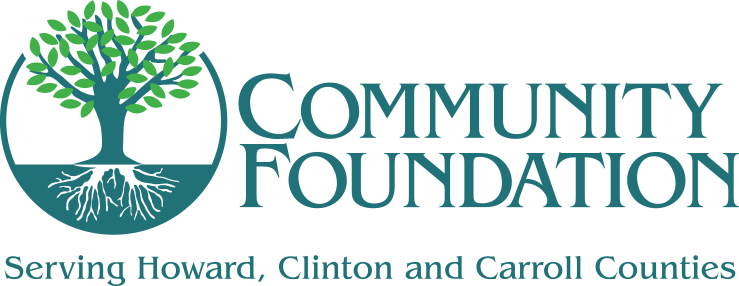
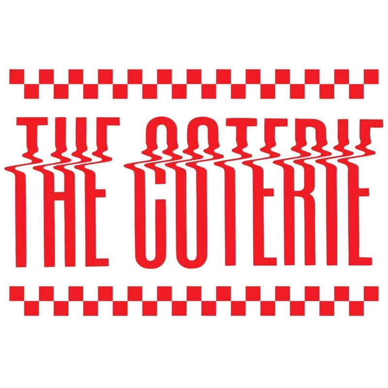
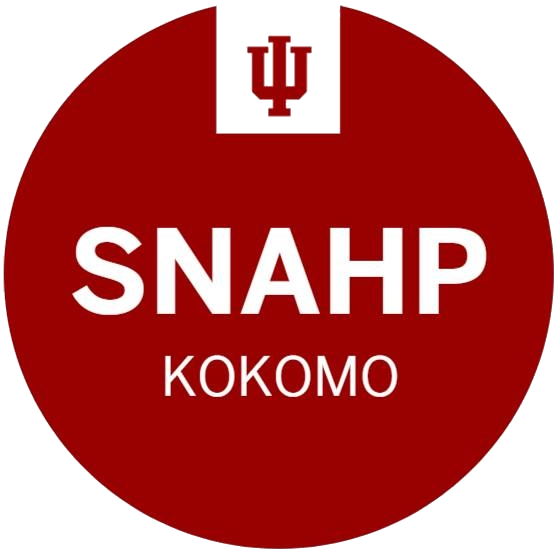

These businesses made the Scarecrow Scavenger Hunt possible.
First Friday, October 2 — downtown Kokomo
Please use crosswalks, and bring a phone light after dark. 🔦
🗺️ View the Scarecrow Trail Map


Community Foundation of Howard County Formed as a nonprofit public charity in March 1991, the Foundation funds local grants and scholarships — its grantmaking has even commissioned new music for the Howard County Music Festival. Visit official site ↗
The Coterie A second-floor downtown spot at 107 W. Sycamore St. blending a craft beer and cocktail lounge with burgers and live music. Visit official site ↗
Pix Pots Pottery
A Kokomo studio handcrafting ceramics — unique mugs, bowls, and custom decal mugs.
Visit official site ↗
UpCreations
UP Creations is one of Kokomo Urban Outreach's youth work activities, where participants craft and sell home décor — 'UP' stands for unleashing potential, passion, and purpose.
Visit official site ↗
Community First Bank of Indiana
Established February 3, 2003 and headquartered in Kokomo — its CommuniTee Giveback Program matches up to $500 in donations to local causes.
Visit official site ↗
Kokomo Tribune
Founded October 30, 1850 as the Howard Tribune, it's one of Indiana's oldest newspapers — its motto is 'Positively, Part of Your Life.'
Visit official site ↗
Oscar's Pizza
Serves pizza plus calzones, stromboli, breadsticks, and salads — with listings calling out its Detroit-style and creative specialty pies.
Visit official site ↗
Dechert Law Office
A general-practice law firm at 217 N. Main St. in downtown Kokomo, concentrating in criminal law, family law, and personal injury.
Visit official site ↗
First Farmers Bank & Trust
Roots trace back to 1885, when it opened as Mark Tully's Exchange Bank in Converse, Indiana — today it serves more than 60,000 clients across Indiana and Illinois.
Visit official site ↗
The Hardie Group
A family-run Kokomo realty owned by Kevin and Nancy Hardie — 'family, tradition and pride are what The Hardie Group is all about.'
Visit official site ↗
Fired Arts Studio
A family arts center offering pottery painting, canvas painting, and mosaics — no experience required.
Visit official site ↗

Lucky Raven Tattoo Lounge Began as Devon Wooldridge's one-person private studio at Fade Salon, then expanded into a larger collaborative shop with multiple artists. (Facebook is the shop's official online presence.) Visit official site ↗
P.F. Hendricks & Co.
Founded in 2015 by sisters and named for their mother, Patricia Faye Hendricks — nearly every brand they stock is Fair Trade Certified, eco-friendly, or socially responsible.
Visit official site ↗
Crossroads Community Church
A non-denominational Kokomo church with two campuses — Downtown at 116 N. Main St. and South — and a mission of helping people take 'their next step with Christ.'
Visit official site ↗
Bohemian Tattoo
An artist-owned custom tattoo studio with an in-house gallery showing original artwork by its artists.
Visit official site ↗